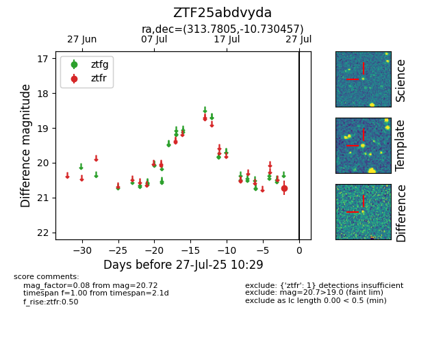

Target ZTF25abdvyda at 2025-07-27 10:29, see:
FINK: fink-portal.org/ZTF25abdvyda
Lasair: lasair-ztf.lsst.ac.uk/objects/ZTF25abdvyda
ALeRCE: alerce.online/object/ZTF25abdvyda
alt names
ZTF25abdvyda (ztf,fink)
coordinates:
equatorial (ra, dec) = (313.7805,-10.73046)
galactic (l, b) = (37.3083,-32.29154)
photometry
last ztfr=20.72
1 ztfr detections
